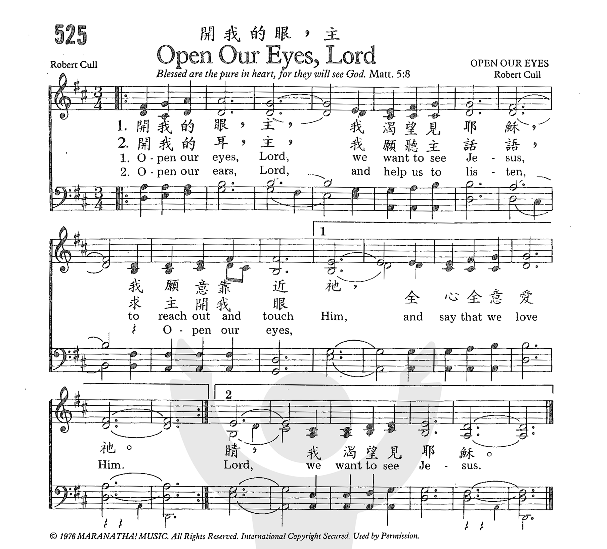

|
Open our eyes, Lord, we want to
see Jesus |
【開我的眼睛】 |
|
Open our eyes, Lord, |
|
|
https://www.zanmeishige.com/tab/26097.html?songbook=1&index=525
 |
|
|
|
|

- Audio files: MIDI
-
Open Our Eyes, Lord
(We Want to See Jesus) - lyric video - YouTube
-
Open Our Eyes -
Maranatha Singers - YouTube
-
Open Our Eyes -
YouTube
| Text: | Open Our Eyes, Lord |
| Author: | Robert Cull |
| Tune: | OPEN OUR EYES |
| Arranger: | David Allen |
| Composer: | Robert Cull |
| Short Name: | Robert Cull |
| Full Name: | Cull, Robert |
| Birth Year: | 1949 |
| Short Name: | Robert Cull |
| Full Name: | Cull, Robert |
| Birth Year: | 1949 |
Cull, Robert
1949-
https://hymnary.org/person/Cull_R
Open our
eyes, Lord, we want to see Jesus開我的眼睛
調名: OPEN OUR EYES
世紀335
34554
“Blessed are the pure in heart, for they shall see God” (Matt. 5:8)
INTRO.:
Among hymnbooks published by members of the Lord’s church for use in churches of
Christ, “Open Our Eyes” has appeared (sometimes titled “Open Our Eyes, Lord” or
“Open My Eyes”) in the 1990 Songs of the Church 21st C. Ed. and the 1994 Songs
of Faith and Praise both edited by Alton H. Howard; the 1992 Praise for the Lord
edited by John P. Wiegand; the 2010 Songs for Worship and Praise edited by
Robert J. Taylor Jr.; and the 2012 Psalms, Hymns, and Spiritual Songs edited by
Steve Wolfgang et. al; in addition to Hymns for Worship Revised (not in the
original edition). In other books of my collection, I have seen the song in the
1986 Hymnal for Worship and Celebration published by Word Music; the 1991
Baptist Hymnal published by Convention Press; the 1997 Celebration Hymnal
published by Word Music and Integrity Music; and the 2001 Worship and Rejoice
hymnal published by Hope Publishing Company. All of these, except Hymns for
Worship and Psalms, Hymns, and Spiritual Songs, have only stanza 1, although it
is sometimes divided into two stanzas. For the purpose of this hymn study, I
shall divide each HFWR stanza into two.
The song mentions different aspects of our being that we should want the Lord to
open.
I. Stanza 1 asks the Lord to open our eyes.
Open our eyes, Lord,
We want to see Jesus,
To reach out and touch Him
And say that we love Him.
A. We need to have the Lord open our eyes so that we may behold wondrous things
from His law: Ps. 119:18
B. We literally cannot see Jesus today, but we can see what is revealed about
Him in the written word so that we can rejoice with joy unspeakable and full of
glory: 1 Pet. 1:8
C. Therefore, we should say that we love Him with all our heart, soul, and mind:
Matt. 22:36-38
II. Stanza 2 asks the Lord to open our ears.
Open our ears, Lord,
And help us to listen.
Open our eyes, Lord,
We want to see Jesus.
A. Jesus wants us to hear with our ears: Matt. 13:9
B. It is with our ears that we listen to the words which tell us about Jesus:
Acts 2:22-24
C. Therefore, we should open our ears that we might hear Him: Matt. 17:1-5
III. Stanza 3 asks the Lord to open our hearts.
Open our hearts, Lord,
We want to know Jesus,
To follow and trust Him,
And show that we love Him.
A. We need to keep our hearts with all diligence because out of them spring the
issues of life: Prov. 4:23
B. It is with our hearts that we come to know the only true God and His Son
Jesus Christ, which is the basis for eternal life: Jn. 17:4
C. But it is also with our hearts that we show the Lord how much we love Him by
keeping His commandments: 1 Jn. 5:3
IV. Stanza 4 asks the Lord to open our minds.
Open our minds, Lord,
To think of His goodness,
Open our eyes, Lord,
We want to see Jesus.
A. It is with our minds that we serve the law of God: Rom. 7:25
B. We can be encouraged to do so by thinking of Christ’s goodness: Acts 10:38
C. Therefore, we should always strive to have the mind in us that was also in
Christ Jesus: Phil. 2:5-9
CONCL.:
1. Open our eyes, Lord,
We want to see Jesus,
To reach out and touch Him
And say that we love Him.
2. Open our ears, Lord,
And help us to listen.
Yes, open our ears, Lord,
We want to hear Jesus.
3. Open our hearts, Lord,
We want to know Jesus,
To follow and trust Him,
And show that we love Him.
4. Open our minds, Lord,
To think of His goodness,
Yes, open our minds, Lord,
We want to see Jesus.
Well, that’s my take on the song. Certainly, it should always be our aim to
request that the Lord should “Open Our Eyes.”
https://hymnstudiesblog.wordpress.com/2021/01/12/open-our-eyes/